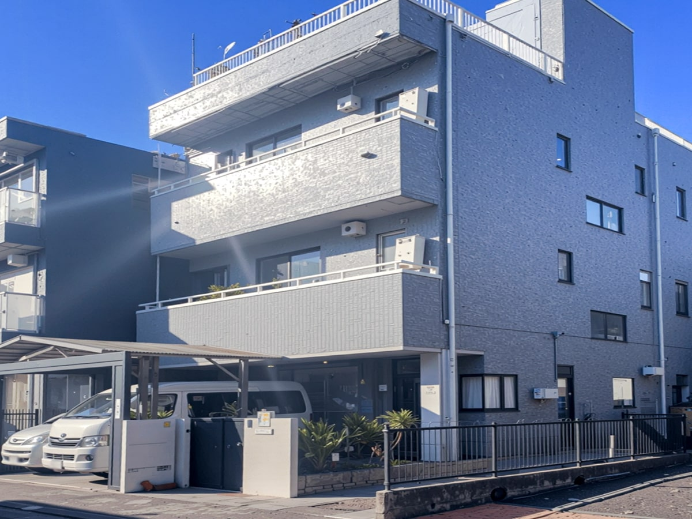
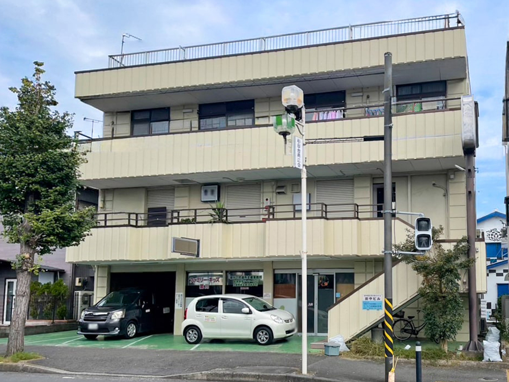
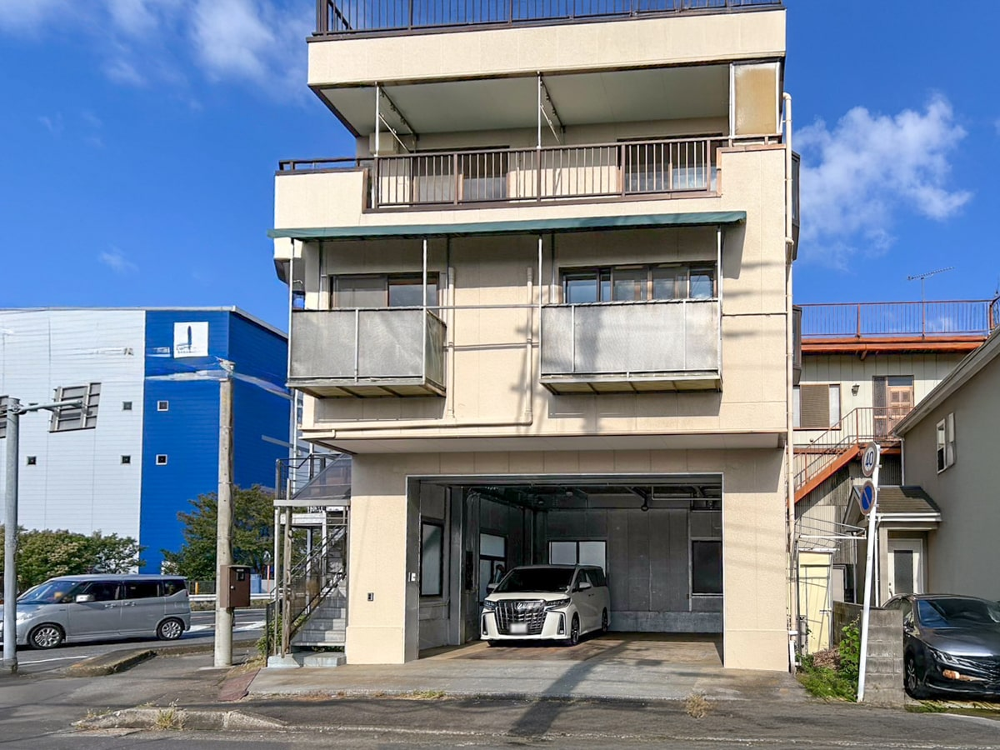

Machida Recovery Center
町田リカバリーセンター
LUMIRIZE / GUIDE
คู่มือสำหรับการปรึกษาเรื่องที่อยู่อาศัยกับ LUMIRIZE ค่าใช้จ่ายด้านล่างอ้างอิงระเบียบการดำเนินงานที่มีผลตั้งแต่วันที่ 1 ตุลาคม 2026 โดยจะยืนยันเงื่อนไขรายบุคคลก่อนทำสัญญา
เรารับปรึกษาเรื่องที่อยู่อาศัยจากผู้ต้องการความช่วยเหลือ ครอบครัว และหน่วยงานสนับสนุนในโตเกียว คานางาวะ และชิบะ แม้ไม่ได้เข้าร่วมกิจกรรมของ Sagamihara DARC ก็ปรึกษาได้ ที่พักไนท์แคร์เฮาส์เน้นให้บริการแก่ผู้ใช้บริการ Sagamihara DARC โดยตรวจสอบห้องว่าง การอยู่ร่วมกัน และความต้องการความช่วยเหลือเป็นรายบุคคล มีเจ้าหน้าที่ผลัดเวรให้คำปรึกษาการใช้ชีวิต ดูแลความเป็นอยู่ และรับมือเหตุฉุกเฉินสำหรับผู้พักอาศัยตลอด 24 ชั่วโมง ซึ่งต่างจากเวลารับปรึกษาทางโทรศัพท์สำหรับบุคคลทั่วไปด้านล่าง
เราประสานงานกับซากามิฮาระดาร์ก ซึ่งเป็นหน่วยงานพันธมิตร เพื่อเชื่อมโยงกิจกรรมฟื้นฟูในเวลากลางวันกับการช่วยเหลือด้านการใช้ชีวิตประจำวัน ต่อไปนี้คือสถานที่ทั้งสี่แห่งที่แนะนำในหน้าบริการภาษาญี่ปุ่น
町田リカバリーセンター

大和プライマリーケアセンター

愛川トリートメントセンター

相模原上溝ヒーリングセンター
เราจะแนะนำที่พักเป็นรายบุคคลหลังจากตรวจสอบห้องว่าง สถานการณ์และความต้องการของท่าน หากต้องการเยี่ยมชม กรุณาติดต่อช่องทางปรึกษาเพื่อนัดหมายก่อน
ที่อยู่อาศัยเช่าทั่วไปและบ้านพักไนท์แคร์มีเงื่อนไขต่างกัน ระหว่างการปรึกษาหรือเยี่ยมชม เราจะตรวจสอบเรื่องต่อไปนี้เกี่ยวกับที่พักที่เสนอให้ร่วมกัน
อุปกรณ์และความเป็นไปได้ในการพักร่วมกับบุตรหรือครอบครัวขึ้นอยู่กับที่พักและระบบช่วยเหลือ กรุณาแจ้งความต้องการของท่าน เราไม่สามารถรับประกันการเข้าพักในสถานที่ใดสถานที่หนึ่งได้
ค่าปรึกษาและค่าช่วยเหลือในการไปติดต่อหน่วยงานเป็น 0 เยน ค่าเช่าและค่าใช้จ่ายเริ่มต้นของที่พักเช่าทั่วไปเป็นไปตามสัญญากับผู้ให้เช่า ค่าเดินทางและค่าใช้จ่ายจริงอื่น ๆ จะแจ้งล่วงหน้า ตารางต่อไปนี้เป็นอัตรามาตรฐานของไนท์แคร์เฮาส์
| ค่าที่พัก | 41,000 เยนต่อเดือน หรือ 1,500 เยนต่อวัน ตกลงวิธีคิดเมื่อทำสัญญา และไม่เรียกเก็บซ้ำสองแบบในช่วงเวลาเดียวกัน |
|---|---|
| ค่าส่วนกลาง | 3,000 เยนต่อเดือน |
| ค่าน้ำ ไฟ และสาธารณูปโภค | 15,000 เยนต่อเดือน |
| ยอดพื้นฐานรายเดือน | 59,000 เยน (ค่าที่พัก + ค่าส่วนกลาง + ค่าสาธารณูปโภค) |
| ค่าอาหาร | 600 เยนต่อมื้อที่จัดให้จริง ยืนยันความประสงค์เมื่อทำสัญญา และปรับยอดหรือคืนเงินที่ชำระล่วงหน้าสำหรับมื้อที่ไม่ได้จัดให้ |
| ค่าปรึกษา / ช่วยเหลือในการไปติดต่อ | 0 เยน ค่าใช้จ่ายจริงที่ตกลงกันคิดแยกต่างหาก |
| เงินประกัน | 0 เยน ค่าใช้จ่ายในการคืนสภาพเมื่อย้ายออกตรวจสอบแยกตามระเบียบและสัญญา |
ตัวอย่าง: พัก 30 วัน รับอาหารวันละ 3 มื้อ = 59,000 เยน + (600 เยน × 90 มื้อ) = 113,000 เยน ไม่รวมค่าเดินทางและค่าใช้จ่ายจริงอื่น ๆ
เงินใช้จ่ายส่วนตัวและค่าครองชีพเดือนละ 60,000 เยนเป็นเงินของผู้พักอาศัย ไม่ใช่ค่าบริการของ LUMIRIZE แหล่งเงิน วิธีฝากและจ่ายเงินตกลงกันเป็นรายบุคคล หากบริษัทรับฝาก จะเก็บแยกจากค่าบริการและเงินของบริษัท พร้อมแจ้งรายการทุกเดือน ยอดที่ยังไม่จ่ายจะยกไปงวดถัดไปหรือคืนตามระเบียบ หากฝากเงินส่วนตัวเพิ่ม 60,000 เยนจากตัวอย่างข้างต้น ยอดเงินรวมจะเป็น 173,000 เยน ซึ่งไม่ใช่ค่าบริการของบริษัททั้งหมด
ก่อนย้ายเข้าจะยืนยันพื้นที่ วันที่ต้องการเข้า ห้องว่าง กฎการอยู่ร่วมกัน ความช่วยเหลือด้านชีวิตและสุขภาพ อาหาร ภาษา วิธีชำระเงิน และเงื่อนไขการย้ายออก การเปลี่ยนแปลงสัญญาเดิมต้องผ่านคำอธิบายและความยินยอมที่จำเป็น ดูระเบียบภาษาญี่ปุ่นสำหรับการคิดตามวัน การพักค้างนอกสถานที่ และการเข้าโรงพยาบาล
รายละเอียดค่าใช้จ่ายต้นฉบับ (ภาษาญี่ปุ่น) · ระเบียบการดำเนินงานฉบับเต็ม (ภาษาญี่ปุ่น)
ได้ เราจะอธิบายทางเลือกและเอกสารที่จำเป็น การรับเข้าพักยังขึ้นอยู่กับเงื่อนไขของที่พักแต่ละแห่ง
ภาษาญี่ปุ่น อังกฤษ เกาหลี ตากาล็อก และไทย โปรดแจ้งภาษาและเวลาที่สะดวกเพื่อประสานเจ้าหน้าที่และล่าม คุณเขียนแบบฟอร์มด้วยภาษาของตนเองได้
ได้ เลือกในแบบฟอร์มว่าให้ติดต่อทางอีเมลเท่านั้น โทรศัพท์เท่านั้น ได้ทั้งสองทาง หรือไม่ต้องตอบกลับ และระบุการฝากข้อความเสียงกับเวลาที่ติดต่อได้
ทั้ง 4 เรื่องใช้ตัวละครสมมติเพื่ออธิบายการช่วยเหลือ เสียงเป็นภาษาญี่ปุ่น เรื่องที่ 3 และ 4 มีฉบับคำบรรยายญี่ปุ่นหรืออังกฤษให้เลือก
เวลารับโทรศัพท์ (เวลาญี่ปุ่น): จันทร์–ศุกร์ 10:00–17:00 น. เสาร์และวันหยุดนักขัตฤกษ์ 10:00–13:00 น. ปิดวันอาทิตย์ รับอีเมลได้ตลอดเวลาและตอบในเวลารับเรื่อง โปรดนัดหมายก่อนเดินทางมา
ชั้น 3 เลขที่ 3-3-20 ชิโยดะ เขตชูโอ เมืองซากามิฮาระ จังหวัดคานางาวะ 252-0237 ประเทศญี่ปุ่นเปิดแบบฟอร์มปรึกษาคู่มือนี้เป็นเนื้อหาสรุป หน้ารายละเอียดบริษัท นโยบาย และเอกสารกฎหมายที่ระบุว่า “ภาษาญี่ปุ่น” ยังคงเป็นภาษาญี่ปุ่น